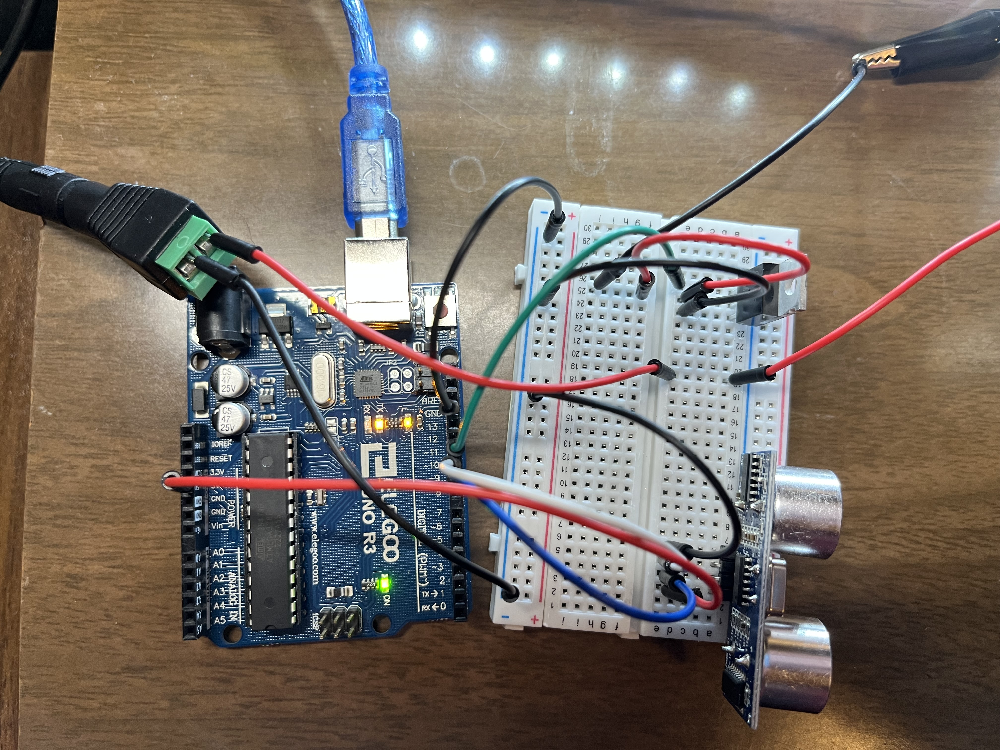

Overview
I have created a device that could detect the distance and adjust the brightness of the LED strip corresponds to the distance. When the distance is further, the LED strip will become brighter, when the distance is closer, the LED strip will become dimmer.
Schematic
- In order to light up the LED strip, I choose to use the N-MOSFET transistor and external power supply with 12V. For the input source, I choose to use the ultrasonic sensor.
- On the box of the LED strip, I find the information of its current at 12V is 1.5A which is samller than the max current of the transistor: 32A.
Circuit
According to the schematic, I have built the circuit with Arduino on the breadboard.
Firmware
// defines pins numbers
const int trigPin = 9; // Pin 9 is Trig Pin
const int echoPin = 10; // Pin 10 is Echo Pin
const int transPin = 11; // Pin 11 is Transistor
// defines variables
long duration; // maximum range of untrasonic sensor
int distance; // initialize distance
void setup() {
pinMode(trigPin, OUTPUT); // Sets the trigPin as an Output
pinMode(echoPin, INPUT); // Sets the echoPin as an Input
Serial.begin(9600); // Starts the serial communication
}
void loop() {
// Clears the trigPin
digitalWrite(trigPin, LOW);
// delay for 2 micro seconds
delayMicroseconds(2);
// Sets the trigPin on HIGH state for 10 micro seconds
digitalWrite(trigPin, HIGH);
// delay 10 micro seconds
delayMicroseconds(10);
// set the trigPin to low
digitalWrite(trigPin, LOW);
// Reads the echoPin, returns the sound wave travel time in microseconds
duration = pulseIn(echoPin, HIGH);
// Calculating the distance
distance = duration * 0.034 / 2;
// Prints the distance on the Serial Monitor
Serial.print("Distance: ");
// Prints the value of the distance
Serial.println(distance);
// Check if the distance is in 20
if (distance <= 20) {
// if the distance is in 20, adjust the brightness by the distance
// times a factor of 10 to make it clearer.
analogWrite(transPin, distance*10);
}else{
// if the distance is further than 20, turn off the LED strip
analogWrite(transPin, 0);
}
}